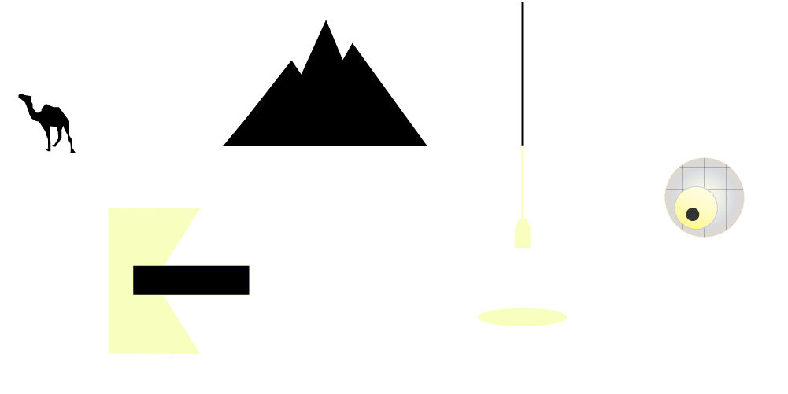

<footer>
    <div class="map-wrapper" onclick="">
      <div class="imageMap" aria-haspopup="true"> 
        <div class="hotspots">
          <div>
            <a href="{{baseurl}}/random/" class="camel" data-menu-src="../assets/img/camel.png" rel="nofollow"></a>
          </div>
          <div>
            <a href="{{baseurl}}/random/" class="mountain" data-menu-src="../assets/img/mountain.png" rel="nofollow"></a>
          </div>
          <div>
            <a href="{{baseurl}}/random/" class="light" data-menu-src="../assets/img/light.png" rel="nofollow"></a>
          </div>
          <div>
            <a href="{{baseurl}}/random/" class="eye" data-menu-src="../assets/img/eye.png" rel="nofollow"></a>
          </div>
          <div>
            <a href="{{baseurl}}/random/" class="abstract" data-menu-src="../assets/img/abstract.png" rel="nofollow"></a>
          </div>
        </div>
      </div>
    <p class="foot">
    <span>Created by:</span>
      <a class="kat" href="http://www.freshconceptual.com/">Katharine Hargreaves</a> & 
      <a class="kei" href="http://www.keishaperry.com/">Keisha Perry</a>
    </p> 
    </div>
  <script>
  $(".imageMap a").on("mouseenter", function() {
    $("#mapimg").attr("src", $(this).data("menu-src"));
  }).on("mouseleave", function() {
    $("#mapimg").attr("src", $("#mapimg").data("menu-src"));
  });
  </script>

</footer>